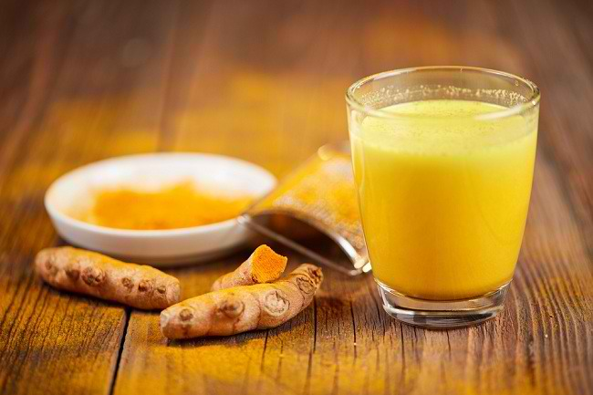
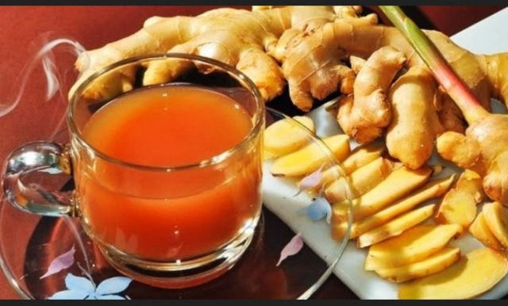
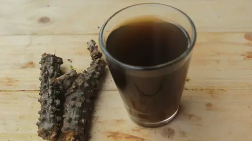

Showcase dan Detail Produk Jamu

Temulawak
Jamu Temulawak adalah minuman herbal tradisional khas Indonesia
yang dibuat dari rimpang temulawak (Curcuma xanthorrhiza).
Rp. 12.000 / Botol
Pesan Sekarang
Temulawak mengandung senyawa aktif utama seperti kurkuminoid dan
xanthorrhizol. Kurkuminoid berperan sebagai antioksidan dan
antiinflamasi yang membantu melindungi sel tubuh dari kerusakan akibat
radikal bebas, sementara xanthorrhizol dikenal memiliki sifat
antibakteri dan mendukung kesehatan sistem pencernaan. Karena
kandungan inilah, jamu temulawak sering dikonsumsi untuk membantu
meredakan perut kembung, mual, serta menjaga metabolisme tubuh tetap
seimbang.

Kunir Asam
Jamu Kunir Asam adalah minuman herbal tradisional Indonesia yang
dibuat dari perpaduan kunyit (kunir) dan asam jawa. Jamu ini
sangat populer, terutama di kalangan perempuan, karena dikenal
bermanfaat untuk menjaga kebugaran tubuh, membantu meredakan
nyeri, serta menyegarkan badan secara alami.
Rp. 15.000 / Botol
Pesan Sekarang
Kunyit mengandung senyawa aktif kurkumin yang bersifat antiinflamasi,
antioksidan, dan antibakteri. Senyawa ini membantu mengurangi
peradangan, mendukung sistem kekebalan tubuh, serta menjaga kesehatan
pencernaan. Sementara itu, asam jawa memberikan rasa segar sekaligus
membantu melancarkan pencernaan dan menyeimbangkan metabolisme tubuh.
Kombinasi keduanya membuat jamu kunir asam sering dikonsumsi untuk
membantu meredakan nyeri haid, pegal-pegal, serta membantu mengurangi
bau badan.

Gebyokan
Jamu Gebyokan adalah minuman herbal tradisional khas Indonesia
yang dikenal sebagai jamu campuran berbagai rempah dan rimpang
pilihan. Jamu ini biasanya diracik dari kombinasi bahan alami
seperti kunyit, jahe, kencur, temulawak, serai, kayu manis, dan
asam jawa, sehingga menghasilkan cita rasa yang kaya serta manfaat
kesehatan yang menyeluruh.
Rp. 8.000 / Botol
Pesan Sekarang
Kandungan berbagai rempah dalam jamu gebyokan menjadikannya berkhasiat
untuk menghangatkan tubuh, meningkatkan daya tahan, dan membantu
melancarkan peredaran darah. Jahe dan kencur berperan sebagai
antiinflamasi alami yang membantu meredakan pegal dan masuk angin,
sementara kunyit dan temulawak mendukung kesehatan pencernaan serta
fungsi hati. Tambahan serai dan kayu manis memberikan efek relaksasi
sekaligus aroma yang menenangkan.

Beras Kencur
Jamu Beras Kencur adalah minuman herbal tradisional khas Indonesia
yang dibuat dari perpaduan beras dan kencur (Kaempferia galanga).
Jamu ini sangat populer di berbagai kalangan karena rasanya yang
manis, segar, dan mudah diterima, sekaligus dikenal memiliki
banyak manfaat untuk menjaga kebugaran tubuh.
Rp. 12.000 / Botol
Pesan Sekarang
Kencur mengandung senyawa aktif seperti minyak atsiri dan flavonoid
yang bersifat antiinflamasi dan antibakteri. Kandungan ini membantu
meredakan pegal-pegal, mengurangi masuk angin, serta mendukung
kesehatan saluran pernapasan. Sementara itu, beras yang telah direndam
dan dihaluskan memberikan efek mengenyangkan ringan dan menjadi sumber
energi, sehingga jamu beras kencur sering dikonsumsi untuk memulihkan
stamina dan meningkatkan nafsu makan, terutama pada anak-anak dan
orang yang sedang dalam masa pemulihan.

Brotowali
Jamu Brotowali adalah minuman herbal tradisional Indonesia yang
dibuat dari batang brotowali (Tinospora crispa). Jamu ini dikenal
luas dengan cita rasanya yang sangat pahit, namun dipercaya
memiliki khasiat besar bagi kesehatan sehingga sering disebut
sebagai “jamu pahit yang menyehatkan”.
Rp. 12.000 / Botol
Pesan Sekarang
Brotowali mengandung berbagai senyawa aktif seperti alkaloid,
flavonoid, dan saponin yang berperan sebagai antioksidan,
antiinflamasi, dan antibakteri alami. Kandungan tersebut dipercaya
membantu menurunkan kadar gula darah, meningkatkan daya tahan tubuh,
serta membantu meredakan peradangan dan demam. Selain itu, jamu
brotowali juga sering dikonsumsi untuk membantu melancarkan pencernaan
dan menjaga metabolisme tubuh.